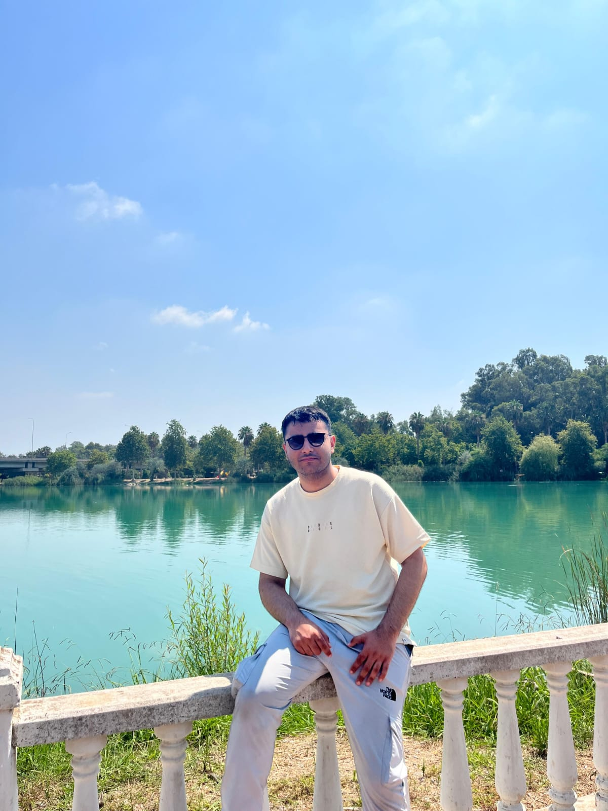

AI Metin Özetleyici
Uzun Türkçe metinleri analiz eden ve yüksek doğrulukla özetleyen Full-Stack web uygulaması.
ReactFlaskOpenAI

Karmaşık problemleri basit, ölçeklenebilir ve estetik mühendislik çözümlerine dönüştürüyorum.
Uzun Türkçe metinleri analiz eden ve yüksek doğrulukla özetleyen Full-Stack web uygulaması.
Gerçek zamanlı harita verileriyle çalışan, kurye/araç takibi simülasyonu.
Trello benzeri, sürükle-bırak özellikli modern görev yönetim uygulaması.
Kullanıcıların etkinlik oluşturabildiği kapsamlı sosyal platform.
Sıfırdan geliştirilmiş fizik ve render motoruna sahip 2D oyun altyapısı.
TMDb API entegrasyonu ile film verilerini çeken masaüstü uygulaması.